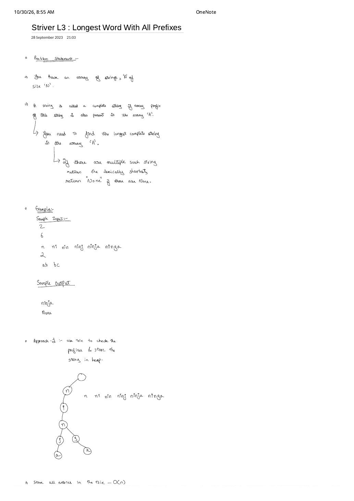
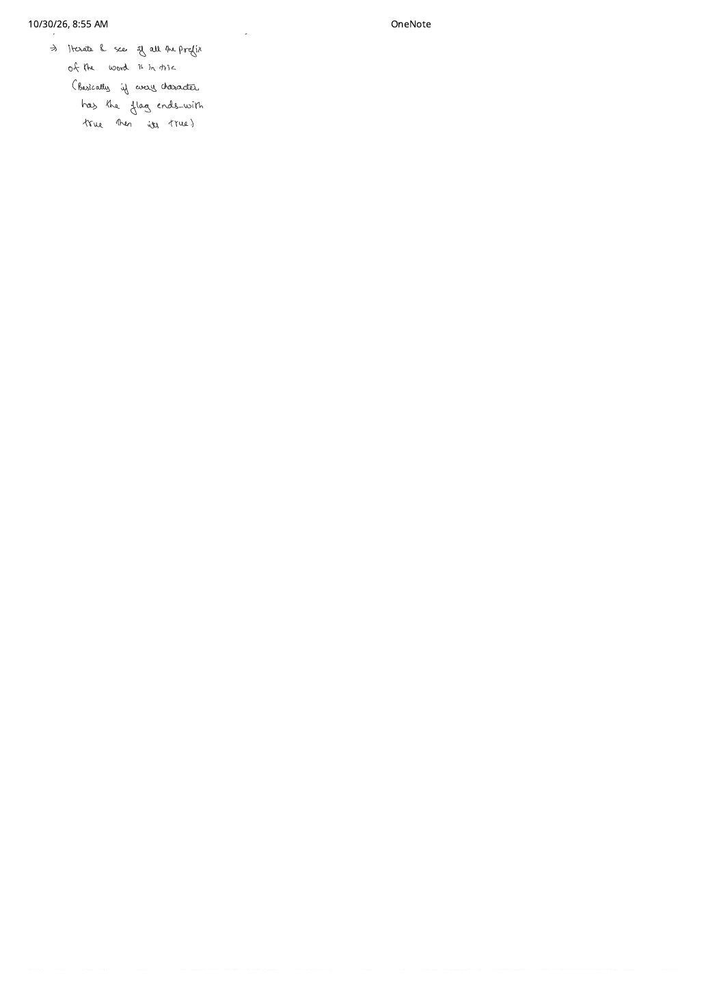

Longest Word With All Prefixes / Complete String (Striver L3)
Expanded from handwritten competitive coding study note: 05_Striver_L3_Longest_Word_With_All_Prefixes.pdf
Checking whether every prefix of a length-$L$ string exists in a hash set requires slicing and hashing $L$ substrings ($1 + 2 + \dots + L = O(L^2)$ work per word). In a Trie, every node along a root-to-word path IS one of its prefixes—meaning we can validate all $L$ prefixes of a word in a single $O(L)$ pointer walk! This note expands Striver Trie Lecture 3 (Coding Ninjas Complete String / LeetCode 1858: Longest Word With All Prefixes / LeetCode 720: Longest Word in Dictionary).
1. Problem Statement & Tie-Breaking Rules
Complete String (Longest Word With All Prefixes)
You are given an array A of $N$ lowercase strings. A string $w \in A$ is called a complete string if every non-empty prefix of $w$ is also present as an element in A.
- Return the longest complete string in
A. - If multiple complete strings share the maximum length, return the lexicographically smallest ("lexically shortest" in the handwritten note) among them.
- If no complete string exists in
A, return"None"(or""on LeetCode).
2. Handwritten Dry Run: Why "ninja" Beats "ninga"
Page 1 of 05_Striver_L3_Longest_Word_With_All_Prefixes.pdf traces two contrasting test cases:
Test Case 1: A = ["n", "ni", "nin", "ninj", "ninja", "ninga"] ($N = 6$)
- At first glance, both
"ninja"and"ninga"have length $5$, and lexicographically"ninga" < "ninja"because'g' < 'j'at index $3$! - Let's check every prefix of
"ninja":"n"$\checkmark$,"ni"$\checkmark$,"nin"$\checkmark$,"ninj"$\checkmark$,"ninja"$\checkmark$ $\implies$ Valid complete string of length $5$. - Now check every prefix of
"ninga":"n"$\checkmark$,"ni"$\checkmark$,"nin"$\checkmark$,"ning"$\times$ (NOT inA!) $\implies$ Disqualified! - Output:
"ninja".
Test Case 2: A = ["ab", "bc"] ($N = 2$)
"ab"requires prefix"a"(missing $\times$);"bc"requires prefix"b"(missing $\times$).- Output:
"None".
ends-with == true, then it's a complete string!" Node 'g' has flag == false, halting "ninga" at depth 4.3. Algorithmic Progression: Hash Set $\to$ Two-Pass Trie $\to$ Lexicographical Trie DFS
- Brute Force with
unordered_set<string>: Insert all $N$ strings into a hash set. For each string $w$ of length $L$, checkset.count(w.substr(0, k))for $k = 1 \dots L$. Creating and hashing all $L$ prefixes costs $O(L^2)$ per word $\implies$ $O\left(\sum |A_i|^2\right)$ time. - Optimal Approach A — Two-Pass Trie (Directly from Handwritten Pages 1–2):
- Pass 1: Insert every word $w \in A$ into a standard Trie, marking
flag = trueat each word's terminal node ($O(\sum |A_i|)$). - Pass 2: For each word $w \in A$, call
checkAllPrefixExists(w): walk fromrootalong $w$, immediately returningfalseif any stepped-into node hasflag == false! Among all valid words, maintain the longest (breaking length ties viaw < longest—or via a max-length/min-lexicographical heap as noted on Page 1, though tracking a single running best string avoids $O(N \log N)$ heap overhead!).
- Pass 1: Insert every word $w \in A$ into a standard Trie, marking
- Optimal Approach B — Single-Pass Pruned Trie DFS: Once all words are inserted, run DFS from
rootiterating childrenc = 0..25in alphabetical order, only stepping into children wherechild->flag == true! Becausec = 0..25visits'a'before'b', the first path to reach a strictly greater depthpath.size() > best.size()is automatically the lexicographically smallest longest complete string!
4. Clean C++ Implementations (Two-Pass & Pruned-Trie DFS)
#include <bits/stdc++.h>
using namespace std;
struct Node {
Node* links[26] = {nullptr};
bool flag = false;
bool containsKey(char ch) const { return links[ch - 'a'] != nullptr; }
Node* get(char ch) const { return links[ch - 'a']; }
void put(char ch, Node* node) { links[ch - 'a'] = node; }
void setEnd() { flag = true; }
bool isEnd() const { return flag; }
};
class Trie {
Node* root;
public:
Trie() : root(new Node()) {}
void insert(const string& word) {
Node* node = root;
for (char ch : word) {
if (!node->containsKey(ch)) {
node->put(ch, new Node());
}
node = node->get(ch);
}
node->setEnd();
}
// Handwritten Page 2 invariant: every character node along `word` must have flag == true
bool checkAllPrefixExists(const string& word) const {
Node* node = root;
for (char ch : word) {
if (!node->containsKey(ch)) return false;
node = node->get(ch);
if (!node->isEnd()) return false;
}
return true;
}
};
string completeString(int n, vector<string>& a) {
Trie trie;
for (const string& word : a) {
trie.insert(word);
}
string longest = "";
for (const string& word : a) {
if (trie.checkAllPrefixExists(word)) {
if (word.size() > longest.size() ||
(word.size() == longest.size() && word < longest)) {
longest = word;
}
}
}
return longest.empty() ? "None" : longest;
}Below is the second C++ implementation demonstrating Approach B—the alphabetical pruned-Trie DFS (which never even enters "ning" because flag == false):
// Approach B: Single-Pass Alphabetical Pruned-Trie DFS
string completeStringPrunedDFS(const vector<string>& a) {
Node* root = new Node();
for (const string& word : a) {
Node* node = root;
for (char ch : word) {
if (!node->containsKey(ch)) {
node->put(ch, new Node());
}
node = node->get(ch);
}
node->setEnd();
}
string best = "";
string path = "";
auto dfs = [&](auto& self, Node* node) -> void {
if (path.size() > best.size()) { // Strict '>' keeps lexicographically smallest first!
best = path;
}
for (int idx = 0; idx < 26; idx++) {
Node* child = node->links[idx];
if (child != nullptr && child->isEnd()) {
path.push_back(static_cast<char>('a' + idx));
self(self, child);
path.pop_back();
}
}
};
dfs(dfs, root);
return best.empty() ? "None" : best;
}5. Complexity Proof & Edge Cases
- Time Complexity: Let $S = \sum_{i=0}^{N-1} |A_i|$ be the sum of lengths of all input strings.
- Pass 1 inserts $S$ characters in $O(S)$ time.
- Pass 2 checks at most $|A_i|$ characters per word; when tie-breaking
word < longesttriggers, comparing two strings of length $|A_i|$ also costs at most $O(|A_i|)$ $\implies$ $O(S) = O(N \cdot L)$ total time!
- Space Complexity: At most $1 + S$ Trie nodes with $26$ pointers each $\implies$ $O(26 \cdot S)$.
- Key Edge Cases:
- Input order independence: Because Pass 1 inserts all strings before Pass 2 checks any string,
A = ["ninja", "ninj", "nin", "ni", "n"](reverse length order) works without needing to sortAby length! - Single-character words (e.g.,
A = ["z", "a"]): Both"z"and"a"are valid complete strings of length $1$; lexicographical tie-breaking returns"a". - No single-character word in
A(e.g.,A = ["ab", "abc", "abcd"]): Every complete string of length $\ge 1$ must have a 1-letter prefix inA; since depth-1 nodes all haveflag == false, the function cleanly returns"None".
- Input order independence: Because Pass 1 inserts all strings before Pass 2 checks any string,
From the Handwritten Notes
View original handwritten page — Striver L3 (Page 1: Complete String Problem Statement, Sample I/O & ninja / ninga Tree)


n ni nin ninj ninja ninga → ninja and ab bc → None), and branching Trie sketch.View original handwritten page — Striver L3 (Page 2: Checking ends-with == true at Every Prefix Node)


ends-with set to true.